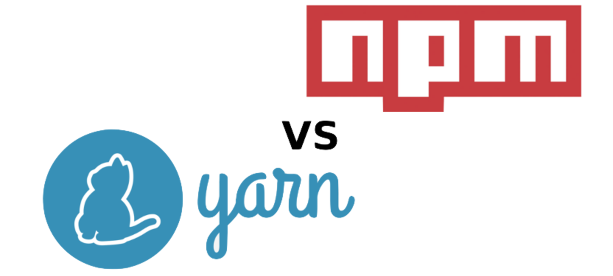

Hello World
CodeTengu Weekly 碼天狗週刊
CodeTengu Weekly 會在 GMT+8 時區的每個禮拜一早上 10:00 出刊，每一期會從目前的 curator 名單中選出三位來負責當期的內容，每個 curator 各自負責不同的領域。如果你在這一期沒有看到自已感興趣的東西，說不定下一期就會有了。你也可以瀏覽一下前幾期的內容。
以下是目前的 curator 陣容：
- @vinta - I failed the Turing Test - 科幻迷。最近在讀 We Are Legion (We Are Bob)
- @saiday - Imnotyourson - 買了文明帝國 6 ...
- @tzangms - Oceanic / 人生海海 - 衝動型購物
- @fukuball - ImFukuball - GCP 好用嗎？
- @mingderwang - Ethereum enthusiast
- @kako0507 - 熱愛嘗試新事物的前端工程師
- @chiahsien - 我們在找 iOS 工程師與其它人才，歡迎來跟我當同事
- @hiroshiyui - 沒有人是一座孤島
- @uranusjr - Smaller Things - 不愛談技術的技術人，最近對做菜很有興趣
- @kkdai - 態度萬歲 - 喜歡 Golang 的略懂工程師
- @yhsiang
大家也可以關注我們的 Facebook、Twitter、GitHub 或微博，有很多 Weekly 看不到的內容。有任何建議或疑問也可以來 Gitter 聊聊，歡迎亂入 👺
 @saiday
@saiday
Why vacation at tech companies should be mandatory: better code, happier people
If you know your team will have to maintain your work while you’re gone, you’ll produce better systems and code.
軟體公司應該強迫員工休假，對大家都有好處。
對公司的好處引援的例子是金融業為了防止員工在內部做一些偷雞摸狗的事情，強迫休假讓每個人平時做的事情交給他的職務代理人，防止一些不好的事情藏在日常的工作之中。
體現在軟體業上，如果員工意識到自己寫的東西要給大家維護 (而且是自己不在的時候)，那他平常就會更把寫出好的 code 當成一回事。
另一個好處跟 Travis CI 之前討論過的休假政策調整一樣 (From Open (Unlimited) to Minimum Vacation Policy)，讓員工因為強迫休假而沒有虧欠感。
Travis CI 在調整成最低休假政策之後，有 25 天帶薪休假日。
如果是在台灣，以勞基法規定第一年沒有特休、滿一年七天到滿第三年才有 10 天特休，中間還不能換公司，就算改成強迫休假也是辦公椅都還沒涼，人又回來了，對公司藏污納垢的排除非常不利啊，希望各位資方在這件事也要硬起來。
Core Data in iOS 10
這次 Core Data 在 iOS 10 的更新做了很多使用上跟 APIs 的改善，以往被批評的部分幾乎都做了調整。
首先是 Core Data stack，這是剛入門的人最慘烈的痛，只是想要弄個 persistent store 為什麼要逼我設定 NSManagedObjectModel, NSPersistentStoreCoordinator, NSManagedObjectContext，而且沒有主流的 best practice，很可能在還沒有原因的情況就選擇了不一樣的 Core Data stack 實作方式，可以參考 Big Nerd Ranch Core Data Stack 列舉的幾種常見設定。
現在有了一個新類別 NSPersistentContainer，我們可以透過它設定一開始的 Core Data stack，而它也只是封裝了以往使用的東西，帶了一些預設的值跟行為而已。fetch 的行為也直接透過 NSPersistentContainer 操作就可以，非常方便。
詳細閱讀： Core Data in iOS10: NSPersistentContainer
這次 Xcode 8 也解決了以往在 xcdatamodel 的介面定義好 entity 後得自己建立對應的 NSManagedObject subclass 的問題，透過 codegen，在新增或變更後就產生一份給你。其實就是陽春版的 mogenerator。
併發的問題也可以透過一個新的類別 NSQueryGenerationToken 來處理，讓以往繁瑣的事情變簡單。
延伸閱讀：NSQueryGenerationToken 官方使用範例
Core Data 經過這次的大調整後，導入門檻終於降到一個合理高度了，已經採用 Core Data 的朋友下次做新的專案也可以用新的方法囉！
Real World Swift Performance
這是一個只有 15 分鐘的 talk，內容蠻有趣，在談 Swift 的 struct, class, protocol, enum, generic 如何影響效能。
結論是 struct 套 protocol 會對效能造成大量影響 (與不套 protocol 的差異為慢了 1300% ~ 15000%)，原因是 protocol 用了一種 Existential Container 的結構來處理 struct，而這個結構又有一個 three word buffer 的設計，假如 struct 超過這個設計限制，就會被分配到 heap 上 (就是這個情況效能差異達到 15000%)，再由 Existential Container 儲存的 protocol 方法調用實體方法，效能就是在這些地方喪失的。
而泛型因為在 compile time 就可以知道型別，編譯器可以做優化，所以沒有太大的效能問題。
其實這個 talk 是從今年的 WWDC Session 416 Understanding Swift Performance 濃縮一部分出來的，所以省略了很多細節，說明的部分會聽不懂是正常的。
JRebel for Android
近期都在開發 Android，而整個 Android 開發的環節最讓我有意見的就是 build app 的時間。
Gradle 優化過後，公司的專案 build 的時間還是接近一分半鐘，這個時間長到足夠讓我把注意力分散又集中在那些奇奇怪怪的影片或動態了。向我的同事抱怨這個困擾之後，他推薦我用了 JRebel，驚為天人！太晚發現了！
簡單來說就是實作了 hot swapping [wiki]，而且除非有改動到 inheritance, interface 或是 AndroidManifest，多數的情況下新 patch 的 build 會直接 reload 當前的 Activity，超棒的！
「蛤，那跟 Instant Run 有什麼不一樣？」
「比較快啊！」
延伸：JRebel for Android and Instant Run: Hot Swaps, Warm Swaps, Cold Swaps, all the Swaps!
 @mingderwang
@mingderwang
JWT authentication with Vert.x, Keycloak and Angular 2
傳統上，幾乎每個網站應用程式，都自己寫客戶資料管理，含認證與授權等功能。到目前為止，很多人的專案應該都是這樣做的，但想寫好這個部分，又要能重複使用，真談何容易? 加上系統如果還需提供 RESTful API，又要會管理 JWT tokens 或 OpenID 連線，甚至帳號還想跟多家 OAuth 2.0 提供商整合，例如 FB，Google，github，twitter 等，幾乎是小公司或小開發團隊無法在有限的時間內達成的任務。
看看這篇文章，建議用開源的 KeyCloak (Single sign-on) SSO 軟體，來幫你做到幾乎所有使用者及 tokens 授權與認證的管裡，專心做你商業邏輯的部分吧!
Use Docker Machine with the Azure driver
雖然 docker-machine 不是只能在微軟 Azure 雲端開 Docker 主機，但台灣還是很多 Windows 的使用者，不妨用這最快的方法，在他們已經購買的 Azure 雲上，來使用 Docker。而如果想用別家雲端部署，也只有 drivers 不同，docker-machine 還支援 Amazon AWS，Digital Ocean，Google Computer Engine，OpenStack，微軟 Hyper-V，IBM Softlayer，還有本機的虛擬主機 Oracle VirtualBox，或其他像 VMware vSphere、Fusion、或 vCloud Air 等。
Mac 或 Windows 使用者，如果已經裝過 Docker Toolbox，就會附贈 docker-machine 指令。 如果只想裝 docker-machine 也可只安裝 docker-machine。 以前使用 boot2docker 的人，也可以利用 升級 方式，把自己本機的 Docker engine 改成 docker-machine，如此一來，不管是要部署 containers 到本地或雲端，變成一件非常簡單的事。
簡單的測試過 docker run hello-world 沒問題後，就可以開始使用 docker。但建議多用 docker-compose 來做部署, 而非單純用 docker 指令。
Interview with Status: A Mobile Light Client Ethereum Messaging App
Status 是一個利用 Ethereum 開放原始碼的電子錢包 Mist，開發出來的一個輕量手機聊天軟體。其最終目的還是希望能做出一個聊天軟體，除了聊天以外，還能做支付，以及執行智能合約。從這公司訪談可以看出，總部在新加坡的這個 8 人團隊，花了很長的時間，希望能找到一個讓 blockchain 能夠輕量化到可以在手機上執行，確又要能保證資料的安全與正確性的方法。
它幾乎是善用了 blockchain 本身的加密特性，還有 Ethereum 本身的 P2P 技術，巧妙地發展出一個新一代的聊天軟體。很明顯，未來的手機，絕對不只是聊天而已，它還能做我們平常做的所有事情，這類的軟體可以讓我們拭目以待。
有興趣開發類似的軟體的人，可以到 status-im GitHub 做協同開發。
 @kako0507
@kako0507

Yarn: A new package manager for JavaScript
JavaScript 實作中常常會使用到不同的相依套件，這些套件通常會透過 package manager 來管理，近幾年最熱門的就是 npm 了，Facebook 最近發表了一套新的套件管理 - Yarn ，用以改善 consistency、security 與 performance 的問題。
這篇文章對 install 的效能做了一些比較。
而 Yarn 除了速度比 npm 快以外，lockfile 也是很重要的一個功能，npm 裡重複的相依套件，在不同的環境下可能有不同的檔案結構，造成有時會發生有些 bug 只在特定電腦的狀況，透過 Yarn 的 lockfile 就可以將相依套件鎖定版本，確保每個環境的結構都是一樣的。
A Javascript journey with only six characters
透過 "[" 、 "]" 、 "(" 、 ")"、 "!" 和 "+" 這六個字元就可以寫 JavaScript ！
三個基本的規則：
- "!" 用來轉換成 Boolean
- "+" 用來轉換成 Number
- "[]" 用來轉換成 String
文內會經過不同轉換讓大家理解是如何得到各個英文字母，也可以透過 JSFuck，自動轉換程式碼。
Tesseract.js: Pure Javascript OCR for 62 Languages
Tesseract.js 是一套 Pure JavaScript 的文字辨識 library ，因為是 Pure JavaScript ，所以不只可以在 NodeJS 上執行，也可以單獨運行在瀏覽器上。
ES proposal: global
JavaScript 已經可以運行在許多不同的平台，而存取 global variable 的方式也各有所不同，本篇文章會簡略介紹存取方式以及 ES6 新的變數宣告方式，以及存取 global 的 polyfill 。
工作機會
Python Web Developer (後端) at StreetVoice
開發與維護 StreetVoice 旗下相關網站，開發流程包含 Code Review、CI 與自動化部署，團隊內有專職的 DevOps 和前端工程師。主要技術棧：Python、Django、MySQL、Redis、Elasticsearch、Ansible 和 AWS。
意者歡迎來信：tzangms@streetvoice.com。